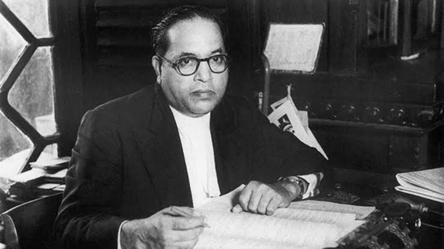
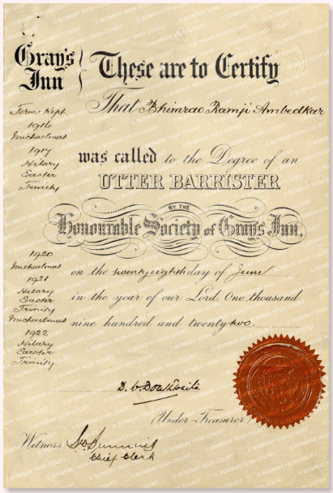
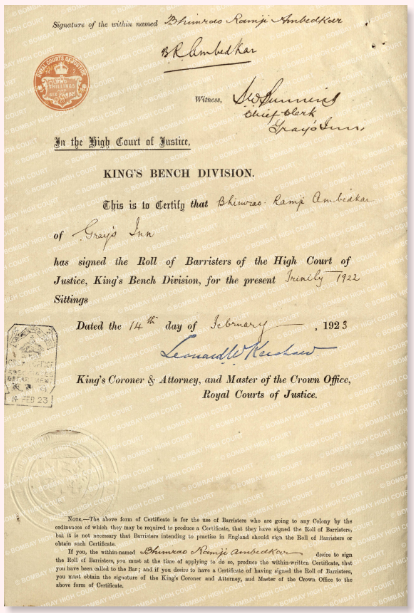
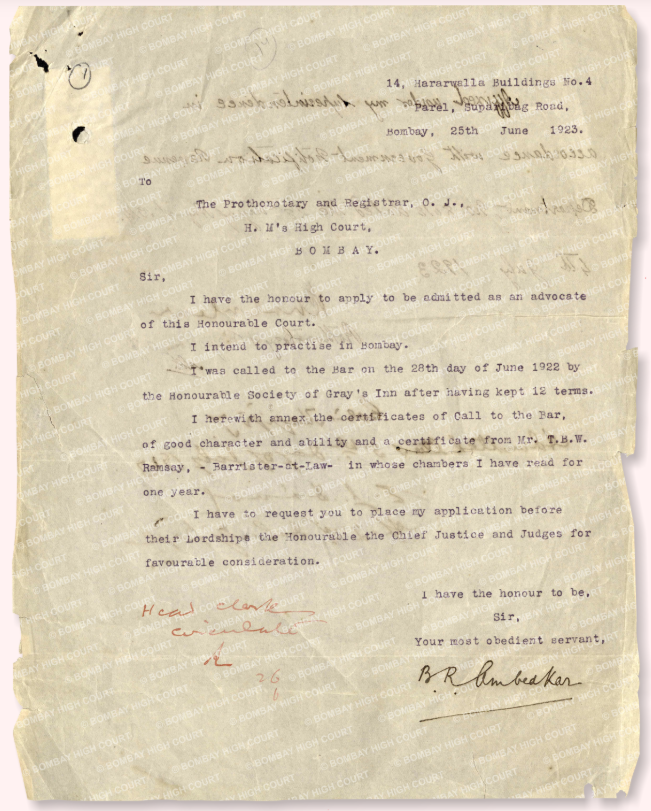
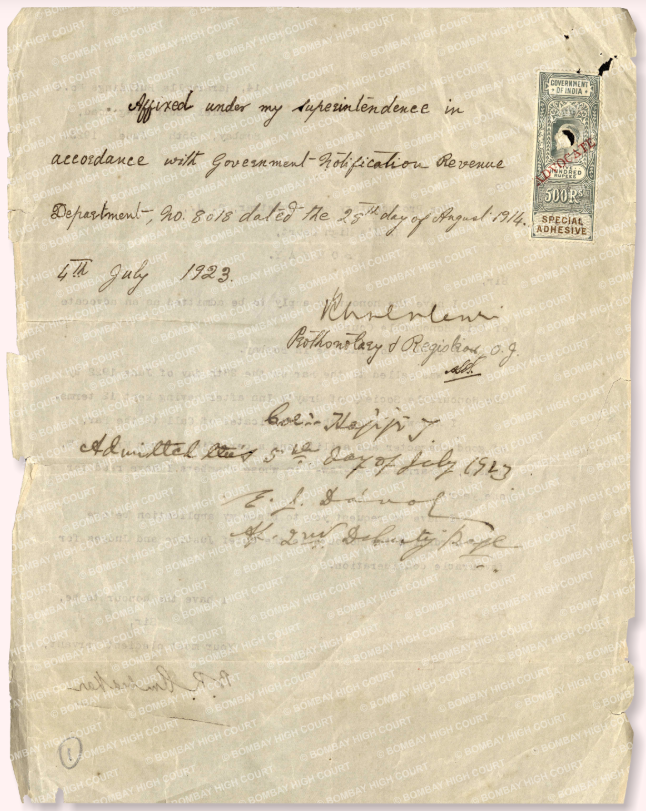
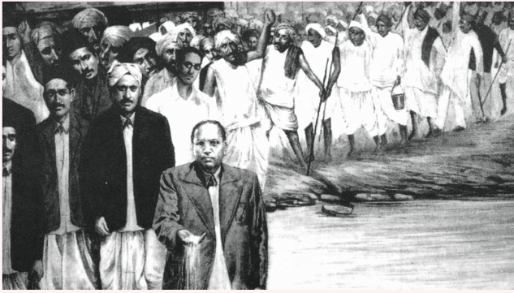

CA Speech – 17 Dec 1946
Dr. Bhimrao Ramji Ambedkar (1891-1956) was born on 14 April 1891 in Mhow Cantonment, Madhya Pradesh. He completed his primary schooling in Satara, Maharashtra and completed his secondary education from Elphinstone High School in Bombay. His education was achieved in the face of significant discrimination, for he belonged to the Scheduled Caste (then considered as ‘untouchables’). In his autobiographical note ‘Waiting for a Visa’, he recalled how he was not allowed to drink water from the common water tap at his school, writing, “no peon, no water”.
Dr Ambedkar graduated from Bombay University in 1912 with a B.A. in Economics and Political Science. On account of his excellent performance at college, in 1913 he was awarded a scholarship by Sayajirao Gaikwad, then Maharaja (King) of Baroda state to pursue his M.A. and Ph.D. at Columbia University in New York, USA. His Master’s thesis in 1916 was titled “The Administration and Finance of the East India Company”. He submitted his Ph.D. thesis on “The Evolution of Provincial Finance in India: A Study in the Provincial Decentralization of Imperial Finance”.
After Columbia, Dr. Ambedkar moved to London, where he registered at the London School of Economics and Political Science (LSE) to study economics, and enrolled in Grey’s Inn to study law. However, due to lack of funds, he had to return to India in 1917. In 1918, he became a Professor of Political Economy at Sydenham College, Mumbai (erstwhile Bombay). During this time, he submitted a statement to the Southborough Committee demanding universal adult franchise.
In 1920, with the financial assistance from Chatrapati Shahuji Maharaj of Kolhapur, a personal loan from a friend and his savings from his time in India, Dr. Ambedkar returned to London to complete his education. In 1922, he was called to the bar and became a barrister-at-law. He also completed his M.S.c. and D.S.c. from the LSE. His doctoral thesis was later published as “The Problem of the Rupee”.
After his return to India, Dr Ambedkar founded Bahishkrit Hitkarini Sabha (Society for Welfare of the Ostracized) and led social movements such as Mahad Satyagraha in 1927 to demand justice and equal access to public resources for the historically oppressed castes of the Indian society. In the same year, he entered the Bombay Legislative Council as a nominated member.
Subsequently, Dr. Ambedkar made his submissions before the Indian Statutory Commission also known as the ‘Simon Commission’ on constitutional reforms in 1928. The reports of the Simon Commission resulted in the three roundtable conferences between 1930-32, where Dr. Ambedkar was invited to make his submissions.
In 1935, Dr. Ambedkar was appointed as the Principal of Government Law College, Mumbai, where he was teaching as a Professor since 1928. Thereafter, he was appointed as the Labour Member (1942-46) in the Viceroy’s Executive Council.
In 1946, he was elected to the Constituent Assembly of India. On 15 August 1947, he took oath as the first Law Minister of independent India. Subsequently, he was elected Chairperson of the Drafting Committee of the Constituent Assembly, and steered the process of drafting of India’s Constitution.
After the first General Election in 1952, he became a member of the Rajya Sabha. He was also awarded an honorary doctorate degree from Columbia University in the same year. In 1953, he was also awarded another honorary doctorate from Osmania University, Hyderabad.
Dr. Ambedkar’s health worsened in 1955 due to prolonged illness. He passed away in his sleep on 6 December 1956 in Delhi.
1 Vasant Moon (eds.), Dr. Babasaheb Ambedkar Writings And Speeches, (Dr. Ambedkar Foundation, Ministry of Social Justice & Empowerment, Govt. of India, 2019) (Re-print)
2 Dhananjay Keer, Dr. Ambedkar Life and Mission, (Popular Prakashan, 2019 Re-print)
3 Ashok Gopal, A Part Apart: Life and Thought of B.R. Ambedkar, (Navayana Publishing Pvt. Ltd., 2023)
4 Narendra Jadhav, Ambedkar: Awakening India’s Social Conscience, (Konark Publishers Pvt. Ltd., 2014).
5 William Gould, Santosh Dass and Christophe Jaffrelot (eds.), Ambedkar In London, (C. Hurst and Co. Publishers Ltd., 2022).
6 Sukhadeo Thorat and Narender Kumar, B.R. Ambedkar: Perspectives on Social Exclusion and Inclusive Policies (Oxford University Press, 2009).
7 Constituent Assembly Debates
When Dr. Ambedkar began his legal education in the United Kingdom in 1916, it was necessary to join an Inn of the Courts to begin one’s legal training. There were four Inns at that time: Inner Temple, Middle Temple, Lincoln’s Inn, and Gray’s Inn. Dr. Ambedkar was admitted to the Gray’s Inn in 1916. To this day, Gray’s Inn retains the following entry in its Index of Admission:
“Nov. 1916, Ambedkar, Bhimrao Ramji, B.A. Bombay, M.A. Columbia; of Baroda State, India; the youngest son of Ramji Ambedkar of Bombay, deceased” (Gasztowicz, 2022)
The details of the courses that he studied as part of his law degree are documented in an edited book ‘Ambedkar in London’ (2022). In 1922, he was called to the bar by Gray’s Inn and became a barrister-at-law.
Later in 1934-35, he delivered lectures on English Constitutional Law at the Government Law College, Bombay. These lectures are available in Volume 12 of his collected writing and speeches, published by the Government of India.


1 Vasant Moon (eds.), Dr. Babasaheb Ambedkar Writings and Speeches. Dr. Ambedkar Foundation, Ministry of Social Justice & Empowerment, Govt. of India, 2019 Re-print
2 Steven Gasztowicz KC, ‘Ambedkar as Lawyer: From London to India in the 1920s’, in William Gould Santosh Dass and Christophe Jaffrelot (eds.), Ambedkar In London. C. Hurst and Co. Publishers Ltd., 2022
3 Savita Ambedkar, Babasaheb: My Life with Dr. Ambedkar; translated by Nadeem Khan. Penguin, 2022
After his arrival in India in 1923, he applied for a licence (Sanad) to practice law. After his enrolment at the bar, he set up his legal practice at the Social Service League in Bombay. Unlike other notable lawyers of that time, Dr. Ambedkar began his practice with few connections and even fewer resources. Despite this, his skills as a lawyer were reflected in several leading cases.
Dr. Ambedkar appeared as a Junior Counsel in 1927 in the defence of Phillip Spratt (one of the founders of the Communist Party of India), who was accused of sedition for his publication of the pamphlet titled ‘India and China’. The defence successfully argued that the pamphlet was a general commentary on imperialism and did not specifically attack the Government of India, thus the offence of sedition was not attracted.
In the Chavadar tank case, Dr. Ambedkar led a group of individuals from oppressed castes to drink water from a tank in Mahad. The plaintiffs (caste Hindus) alleged that the tank was their private property. Dr. Ambedkar, strategizing for the defence, successfully contended that the tank was public property and ought to be equally accessible to all sections of the society. The court held that the plaintiffs cannot rely on the long-standing exclusion of a certain group from using the tank to claim ownership, and that as the tank was managed by the Government, the community at large has a right to use it.
In 1934, Dr. Ambedkar successfully defended the All India Textile Workers Conference by demonstrating the loopholes present in the Trade Disputes Act, 1929. He also defended Prof. R.D. Karve for his work Samaj Swastya. Prof. Karve was accused of obscenity due to his publication on sexual hygiene.
Apart from these high profile cases, he also worked on other cases such as workmen compensation and pro bono cases for individuals from oppressed sections of society.
Through his practice, Dr. Ambedkar rose to become one of the leading lawyers of his day. He was offered an appointment as a District Judge, and the Nizam of Hyderabad also offered to make Dr. Ambedkar the Chief Justice of the State. However, he ultimately turned these offers down. In his 1951 speech, he explained how such roles would hinder his activities as a social and political reformer. He said, “When I returned home after completion of my education in America and Europe. I was offered the post of a District Judge. I was promised to be elevated to the High Court within three subsequent years. I declined the offer saying that I did not want those alluring ties. I feared that after getting into government service I would not be able to serve my people.”


1 Vijay B. Gaikwad, Court Cases Argued by Dr. Babasaheb Ambedkar. Vaibhav Prakashan, 2012.
2 Steven Gasztowicz KC, Ambedkar as Lawyer: From London to India in the 1920s, in William Gould and ors. (eds.), Ambedkar In London. C. Hurst and Co. Publishers Ltd. 2022.
3 Rohit De, Lawyering as Politics: The Legal Practice of Dr. Ambedkar, Bar at Law. 2018.
4 Nanak Chand Rattu, Reminiscences and Remembrance of Dr. B.R. Ambedkar. Samyak Prakashan, 2017.
5 Dhananjay Keer, Dr. Ambedkar Life and Mission. Popular Prakashan, 2019 Re-print.
Cases information are as follow:
Criminal Procedure Code, Section 225 – Omission to state common object of unlawful assembly in a charge is not fatal – Where the common object of an unlawful assembly is specified in the complaint and found by the Court, its Omission in the charge does not vitiate trial: 21 Cal 827, Appl. and 22 Cal. 276 Dist.
[Ambedkar and B.G. Modak – for Applicant]
Citation : AIR 1926 Bombay 314
Workmen’s Compensation Act (1923), Section 3 – Death of workman caused through his act which was incidental to his work – His act was held to arise out of and in the course of his employment.
Held: that the act of the deceased workman in removing the hession cloth was incidential to his work and was done in the performance of his duty, and arose out of and in the course of his employment within S. 3.(P.224, C. 2)
[H.V. Divatia – for Appellant. Ambedkar B.G. Modak – for Respondent.]
Citation : AIR 1927 Bombay 223
Criminal Procedure Code (Act V of 1898), Sec. 239 – Criminal trial – Joint trial – Printer and publisher of an alleged seditious pamphlet – Indian Penal Code (Act XLV of 1860), Sec. 124A. The printer and the publisher of a pamphlet alleged to be seditious can properly be tried jointly for an offence pubnishable under Sec. 124A of the Indian Penal Code, 1860.
[Kanga, Advocate General, with O’Gorman for the Crown, Dalvi, with Ambedkar, for accused No. 1 and Sir Chimanlal Setalvad, with F.J. Patel and Ratanlal Ranchhoddas, for accused No. 2]
Citation : 1928 (30) Bom.L.R. 320
Evidence Act, Ss.9 and 14 – Admissibility of copy of letter written by accused as evidence when the original one was not forthcoming.
Held: that (1) the copy of the letter was relevant to show the accused’s intention and could be admitted as evidence; and (2) it is not necessary for the prosecution to prove that such a letter was sent before the copy could be admitted as evidence [P77 c 2 P. 78 C1].
[Kanga – for the Crown, F. S. Talyarkhan – Gupte, Ambedkar and Ratanlal Ranchhoddas – for Accused.]
Citation : AIR 1928 Bombay 77
Evidence Act, Sec. 14 – Intention of accused charged under S. 124-A, I.P.C. – Writing made, by him and found with him is relevant on the question of intention.
[Kanga, O’Ogrman – for the Crown, F.S. Talyarkhan, Gupte, Ambedkar and Ratanlal Ranchhoddas – for Accused.]
Citation : AIR 1928 Bombay 78
Code of Criminal Procedure, Sec. 195 – Court has power to sanction prosecution for an offence before Commissioner appointed by it – The commissioner is Subodinate to the Court appointing him and the offence to refuse to take the oath and answer the question put by the commissioner is an offence against the Court itself.
[Ambedkar K.A. Padhye – for Applicant, P.B. Shingne – for the Crown.]
Citation : AIR 1927 Bombay 647
Penal Code, Sec. 373 must be read with S. 372 – Object of the possession is the test – Possession for two or three hours by the brothel-keeper in the night is sufficient possession – Bombay Prevention of Prostitution Act, 1923, Sec. 6 – Brothel-keeper availing hereself of the supply of the procuress is guilty of abetment.
[Brown – for the Crown, Daruwalla and Ambedkar – for Accused.]
Citation : AIR 1928 Bombay 336
Civil P.C. (1908) Sec. 152-Decree drawn up in terms of interlocutary application instead of according to final order owing to mistake on part of ministerial servant Court has inherent power to amend decree – Under Sec. 125 the Court has inherent power to vary or amend its own decrees or orders so as to carry out its own meaning. Hence where a decree was apparently drawn up in the terms of the interlocutory application for a final decree by a mistake on the part of a ministerial servant, but it ought to have been drawn up according to the final order of the Judge himself:
Held: that the Court had inherent power to amend it.
[Ambedkar, W.B. Pradhan and G.S. Gupte – for applicant, A.G. Desai and P.B. Gajendragadkar – for Opponent.]
Citation : AIR 1935 Bombay 75
Jurisdiction – Mere definition of areas cannot exclude jurisdiction of Magistrate in rest of district – Sec. 12(2), Criminal P.C. requires express or necessarily implied provisions to exclude jurisdiction – The mere definition of areas of jurisdiction cannot be taken as a provision excluding jurisdiction of the Magistrate in the rest of the district. Sub-Sec. 2, Sec. 12 Criminal P.C. clearly requires some provision excluding jurisdiction in the rest of the district, which is either express or must be inferred by necessary implication. 1921 All 123, Diss from (P. 410 C1).
[B.R. Ambedkar and V.D. Limaye for Accused. P.B. Shingne – for the Crown.]
Citation : AIR 1935 Bombay 409
Trade Disputes Act (VII of 1929), Secs. 16, 17 – Illegal strike – Furtherance of trade dispute within the trade – Association of other disputes renders strike illegal -“Government” – “Community” – “Designed or calculated” – Interpretation – severe, general and prolonged hardship upon the community – Compulsion on Government – General strike in textile industry of India.
[K.Mcl. Kemp, Advocate General, with P.B. Shingne, Government Pleader – for the Crown., B.R. Ambedkar, S.C. Joshi and N.B. Samarth, with A.S. Asyekar and A.G. Kotwal, for accused.]
Citation : 1935 (37) Bom 892
Evidence Act (1872), Sec. 108 Person not heard of for more than seven years cannot be presumed to have died at particular date. Transfer of Property Act (1882), Ss. 43 and 6 – Erroneous representation by transferor that he is full owner though in fact entitled merely to spes successionis – S. 43 operates
[P.V. Kane – for Appellants, Dr. B.R. Ambedkar , S.A. Desai and S.A. Kher – for Appellant No. 6, G.N. Thakore and B.D. Belvi – for Respondent No. 1]
Citation : AIR 1938 Bombay 228
Saranjam – Saranjamdar has no right to create saranjam – A saranjam which is a political inam, appears by its very nature to be incapable of being created except by Government or the sovereign power alone. Hence it is not possible for a saranjamdar to create a saranjam in favour of a stranger : AIR 1929 Bom 14, Expl. Inam – Alienation of sarva inam – Suit to set aside.
[Dr. B.R. Ambedkar B.D. Belvi – for Appellant., G.N. Thakor and S.B. Jathar – for Respondent 1.]
Citation : AIR 1938 Bombay 331
Hindu Law – Alienation – Father – Mortgage not for antecedent debt does not bind son’s interest even if debt is not proved to be for immoral purpose.
[P.B. Gajendragadkar (in No. 303), Dr. B.R. Ambedkar Ramnath Shivlal for A.S. Asyekar (in No. 69), for Appellants., Dr. B.R. Ambedkar and Ramnath Shivlal for A.S. Asyekar (in No. 303), for Respondent 1; P.B. Gajendragadkar (in No. 69), for Respondents 1 to 3.]
Citation : AIR 1938 Bom 443
Hindu Law – Alienation – Manager – Creditor making inquiry and satisfying himself that manager is acting for benefit of estate or family – Real existence of alleged necessity is not condition precedent to validity of charge – What is legal necessity and what is for benefit of estate depends upon circumstances of each case – No duty is cast on creditor to inquire as to what happened to money subsequently. Hindu Law – Alienation – Father – Ancestral property – Alienation is not void but only voidable by son – He can also ratify it. Hindu Law – Alienation – Legal necessity – Second mortgagee of joint family property taking his mortgage with notice of fact that first mortgage was for legal necessity – He cannot raise question of want of legal necessity.
[G. N. Thakor and K.G. Datar – for Appellant. Dr. B.R. Ambedkar G.R. Madbhavi – for Respondent.]
Citation : AIR 1938 Bom 388.
Criminal Trial – Duty of prosecution to call witnesses – Eye witnesses when not numerous must all be examined. Evidence Act (1 of 1872), S. 155(3), S. 145 – Oral statements made to witnesses by others – Questions to witnesses about those statements are legally admissible.
[ Dr. B.R. Ambedkar and T. G. Chobles – for Accused No. 1. T.J. Kedar, R.K. Rau, R.G. Rau, S W.A. Rizwi and W.C. Dutt – for Appellants Nos. 2 to 14.]
Citation : AIR 1939 Nagpur 13
Hindu Law – Alienation – Father – Subsequently born son – Alienation by sole surviving coparcener cannot be objected to by son born to or adopted by him subsequently. Hindu Law – Debts – Coparcener – Debts incurred by sole surviving coparcener are not binding on son adopted in the coparcenary subsequently, unless contracted for necessary purposes or benefit of the family.
[S.R. Purulekar (in No. 149), Dr. B.R. Ambedkar, G.R. Madbhavi and K.R. Bengeri (in No. 222) – for Applellants]
Citation : AIR 1939 Bombay 266
Contract Act (1872), S.2(h) – Nudum pactum – Solicitor’s costs – Solicitor agreeing to accept full taxed costs only in event of success so as to lighten burden of client in event of failure – Agreement is valid and enforcible. Civil P.C.(1908), O.45,R.7 – Object of security – Solicitor can recover his taxed costs by summary proceeding from amount deposited under O.45,R.7.
[ H.C. Coyajee and P.B. Gajandragadkar – for Applicants. Dr. B.R. Ambedkar, and L.G. Khare, and Y.V. Dixit and B.N. Gokhale – for Respondents]
Citation : AIR 1939 Bombay 250
Hindu Law – Religious endowment – Right of worship – Private family devasthan – Worship and management given to members by annual turns but without right to alienate – Descendants through females cannot inherit right of worship and management.
[ Dr. B.R. Ambedkar,and P.S. Bakhale – for appellant. G.K. Chitale and C.H. Patwardhan – for Respondent.0]
Citation : AIR 1939 Bombay 207
Will – Construction – “My community” – Interpretation – The Chitpavan sub-section of the Maharashtra community is a community by itself having peculiar characteristics which distinguish it from other communities forming part of the larger Maharashtra community: 7 Bom 333, Ref – A testator, a Chitpavan Brahmin (Hindu), by his will directed his executors to pay certain legacies and bequests. One of them read as: ” A sum of Rupees… towards medical relief of persons of my community or any other charitable purpose of utility of my community, such object to be named after me:” – Held that the words “my community” referred to Chitpavan Brahmin (Hindu) community and not to the Dakshini community as a whole.
[S.R. Tendulkar – for Plaintiff, Dr. B.R. Ambedkar , M.H. Gandhi and D.B. Desai, and K.A. Somjee – for Defendants 2 &3, and 4 Respectively.]
Citation : AIR 1939 Bombay 202
Grant – Grant of soil in alienated village by Peshwa in 1778 – Inamdar is owner of trees standing on lands already in occupation of khots, dharekaris and permanent tenants. Adverse Possession – Right to trees – Khots, dharekaris and permanent tenants in alienated village openly cutting trees on their lands for more then 35 years to knowledge of inamdar and without his permission – Inamdar’s claim to trees is barred.
[Dr. B.R. Ambedkar and A. A. Adarkar – for Appellants. H.C. Coyajee and Y. V. Dixit – for Respondent (Plaintiff)]/p>
Citation : AIR 1939 Bombay 405
Dekkhan Agriculturists Relief Act (17 of 1879), S.15-D – Suit for account is not maintainable if it requires setting aside sale of equity of redemption – A suit for account of a mortgage which requires the setting aside of the sale of equity of redemption is not maintainable under S. 15-D.
[Dr .B.R. Ambedkar and B.G. Modak – for Appellants.,M.G. Chitale – for Respondent]
Citation : AIR 1939 Bombay 419
Limitation – Limitation can be pleaded even in appeal. Bombay Land Revenue Code (5 of 1879), S. 133 – Sanad granted under S. 133 is not document of title – Person suing for possession need not set aside sanad before obtaining possession – Art. 14, Limitation Act, is not bar to such suit.
[H.C. Coyajee, M.R. Vidyarthi, R.A. Desai, B. Moropanth and R.P. Cholia – for Appellant. B.R. Ambedkar, M.H. Vakeel and P.N. Shende – for Respondent.]
Citation : AIR 1939 Bombay 425
Civil P.C. (1908), S.68 – Date on which status of judgment – debtor is to be considered is date when order for sale is passed. Civil P.C. (1908) O.21, R.64 – Order under O.21, R.64 may be modified if judgment – debtors appear under O.21, R.66 and prove that they are agriculturists. Civil P.C. (1908), S.47 and O.21, R.66 – Administrative directions relating to proclamation of sale do not fall under S. 47 – But order as to whether sale is to be held by Court itself or by Collector falls under S 47.
[K.N. Dharap – for Appellants., Dr. B.R. Ambedkar V.B. Virkar – for Respondents.]
Citation : AIR 1939 Bombay 526
Surety – Managing agent of company standing surety for debt due by company to its creditor – Company would up – Scheme under S. 153, Companies Act – Creditor receiving half sum in cash and other half in shape of preferential shares – This held did not discharge surety. Surety – His liability is co-extensive but not in the alternative. Hindu Law – Joint family business – To justify manager’s standing surety on ground of legal necessity requires strong evidence. Hindu Law – Joint family business – Question whether passing of letter of guarantee by manager is ordinary incident of business is question of fact.
[G.N. Thakor and S.G. Patwardhan – for Appellant. Sir Jamshedji Kanga, B.R. Ambedkar, Ramnath Shivalal and A.S. Asyekar – for Respondents.]
Citation : AIR 1940 Bombay 247
Bombay Abkari Amendment Act (6 of 1940), S. 6 – S. 6 deleting proviso to S. 14-B(1) of Abkari Act – Object of deletion stated. Bombay Abkari Amendment Act ( 6 of 1940), S. 7 – Construction – S. 7 is not retrospective – Notifications effective at date of passing of amending Act alone fall under S. 7 – S. 7 does not affect notifications already rescinded or declared invalid – Notification declared ultra vires by High Court falling within S. 7 – S. 7 cannot revive notification. Bombay Abkari Act (5 of 1878), S. 14-B – Notification under S. 14-B(2) declared ultra vires and invalid by High Court is invalid according to law – Every one can act on that view of law. Government of India Act (1935), S. 100 and Sch. 7, List II, item 31 – Effect of, stated – Provincial Legislature has right to prohibit possession of intoxicants – Its right to legislate as to possession of intoxicants must be exercised subject to right of Central Legislature to legislate in respect of import and export across custom frontiers (Obiter).
[M.C. Setalved (Advocate-General) V.F. Taraporewala, G.N. Joshi and R.A. Jahagirdar (Government Pleader) – for the Crown. Sir Jamshedji Kanga, S.G. Velinker, R.J. Kolah and Dr. B.R. Ambedkar – for Accused.]
Citation : AIR 1940 Bombay 307
Bombay City Police Act (4 of 1912, as amended by Act 14 of 1938), S. 27 – Order under S. 27 by Commissioner is not revisable under S. 439, Criminal P.C.
[B.R. Amebedkar and G.J. Mane – for Applicant M.C. Setalvad, (Advocate-General) and R.A. Jahagirdar (Government Pleader) – for the Crown.]
Citation : AIR 1941 Bombay 334
Bombay City Municipal Corporation Act (3 of 1888), S. 390(1) – Offence under – Summons to accused – Accused should be charged in words of section – Accused instead of being charged with having worked factory in which mechanical power was used charged with working fifty – five electric motors for conducting textile mill without permission u/S. 390(1) – No objection to form of summons held could be taken as it sufficiently informed accused of act complained of. Bombay City Municipal Corporation Act (3 of 1888), S. 390(1) – (as amended by Act 1 of 1916) – Construction – S. 390(1) constitutes two independent offences of establishing new factory in which mechanical powers intended to be employed without permission and working factory in which mechanical power is intended to be employed without permission. Bombay City Police Act (3 of 1888), S. 390, S. 514 – Meaning of ‘continuing offence’ explained – Establishing of factory without permission is offence committed once for all when factory is established – But working of factory without permission is an offence which arises on every day on which factory is so worked. Bombay Municipal Corporation Act (3 of 1888), S. 390 – Offence of working factory without permission – Previous acquittal cannot u/S. 403, Criminal P.C., bar subsequent charge of working factory without permission.
[R. A. Jahagirdas, Government Pleader – for the Government of Bombay. B.R. Amebedkar and H.D. Thakor – for Accused.]
Citation : AIR 1942 Bombay 326
Criminal P.C. (5 of 1898), S. 375, S. 423, S. 418 – Death sentence passed by Sessions Judge at jury trial on majority opinion – Appeal by accused and confirmation case before High Court – It is not necessary to dispose of appeal before dealing with confirmation case – Powers of High Court mentioned in S. 376 are not affected by S. 418(1), S. 423(2) – High Court is bound to consider all questions of law and fact.
[B.R. Ambedkar and V.R. Gadkari – for Accused., S.G. Patwardhan, Government Pleader – for the Crown.]
Citation : AIR 1948 Bombay 244
Penal Code (1860) , Sec. 161 – Delay in trapping accused – The fact that nothing is done for a long time (here, two months) between the alleged offer to bribe and the actual trapping of the accused does not suggest that the story is false. The police authorities have per force to wait until the accused make a further move in the matter. It is not reasonable to suggest that the police authorities should go out of their way and actively invite bribes in order to trap the accused.
[Dr. B.R. Ambedkar Shri H.F.M. Reddy, Advocate, instructed by Shri M.S.K. Sastri, Agent – for Appellants; Shri M. C. Setalvad, Attorney – General for India and Shri C. K. Daphtary, Solicitor – General for India (Shri G. N. Joshi, Advocate, with them), instructed by Shri G. H. Rajadhyaksha, Agent – for the State]
Citation : AIR 1953 SC 179
The Mahad Satyagraha, which took place in 1927 in the town of Mahad in Maharashtra, India, stands as a seminal moment in the history. Led by Dr. B.R. Ambedkar, this nonviolent protest marked a significant step towards achieving social justice, equality, and civil rights for the Dalit community in India.

The oppressed castes (called as Depressed Classes in colonial regime or ex- untouchables) have faced severe discrimination, segregation, and social ostracism in Indian society for centuries. Access to public resources such as water bodies, temples, and schools was often denied to them, perpetuating their social, political and economic marginalization.
The Mahad Satyagraha was a response to these injustices and aimed to challenge the deeply ingrained caste-based discrimination. As a leader of the Depressed Classes, Dr. Ambedkar was at the forefront of opposing the ideology of the caste system. He believed that India not only requires political reform, but also social reform. An effective strategy to fight social inequality while the struggle for freedom was ongoing was important for him. As he summarized in Annihilation of Caste (1936): “That political reform cannot with impunity take precedence over social reform in the sense of the reconstruction of society, is a thesis which I am sure cannot be controverted.”
On 4 August 1923, SK Bole, a social reformer, moved a resolution in the Bombay Legislative Council, which provided that “the council recommends that the untouchable classes be allowed to use all public watering places, in dharamshala which are built and maintained out of public funds administered by parties appointed by government or created by statute, as well as public schools, courts, offices and dispensaries.” Following the resolution, a direction was issued by the Bombay government to the heads of all the departments on 11 September 1923 to give effect to the resolution so far as it relates to the public places and editions, belonging to and maintained by the government. Thereafter, the Mahad Municipality passed a resolution to open the Chavdar tank for the Depressed Classes. However, the municipality’s resolution could not be implemented, as the Depressed Classes were unable to access water from the Chavdar tank due to opposition from the oppressor castes of that area.
To overcome the denial of rights, the Kolaba District Depressed Classes in coordination with Dr Ambedkar and Bahiskrit Hitkarini Sabha decided to hold a conference in Mahad on 19-20 March 1927. Consequently, thousands of members of the Depressed Classes gathered in Mahad to participate in the Satyagraha. On March 20, 1927, Dr. Ambedkar and his followers marched to the Chavdar Lake, where he drank water from it, asserting their right of equality and equal access to public resources. This act sent shockwaves through the conservative society. The oppressor castes even performed a purification ritual of the tank, which according to them had been defiled by the touch of the Untouchables. Under pressure from the oppressor castes, the Mahad Municipality on 4 August 1927 revoked its resolution of 1924 under which it had declared the Chavdar Tank open to the Depressed Classes.
Dr Ambedkar then decided to launch another Satyagraha in December 1927 in Mahad to assert the rights of the Depressed Classes. However, the oppressor castes initiated a legal action against Dr. Ambedkar and his colleagues on 12 December 1927 in the Mahad civil court, seeking issuance of a temporary injunction. On 14 December, the court granted a temporary injunction, which prohibited Dr. Ambedkar, his colleagues, and members of the Depressed Classes or those acting on their behalf, from accessing the Chavdar Tank until further orders were issued. Dr. Ambedkar however decided to continue his proposed Satyagraha during 25-27 December, even though he decided to not go to the Tank till the pendency of the civil suit. On 25 December 1927, Dr. Ambedkar, while addressing the people of the Depressed Classes, stated:
“It is not as if drinking the water of the Chavdar Lake will make us immortal. We have survived well enough all these days without drinking it. We are not going to the Chavdar Lake merely to drink its water. We are going to the Lake to assert that we too are human beings like others. It must be clear that this meeting has been called to set up the norm of equality.”
Dr Ambedkar and his supporters also burnt a copy of ‘Manusmriti’ to symbolically reject the foundations of the caste system. The gathering also passed certain resolutions towards equality, non-discrimination, and equal access to resources.
In the civil suit, the defendants including Dr Ambedkar argued that the tank belonged to the Mahad Municipality and should be open to all. The trial court ruled against the plaintiffs, stating that they failed to prove a longstanding custom excluding untouchables from using the tank, and that this custom did not qualify as a legal right. The case was dismissed in 1937.
An appeal was filed against the decision, but the Assistant Judge, Thana affirmed the lower court’s ruling. The judge held that there was no evidence or legal basis to support the exclusion of untouchables from using the tank. Subsequently, the plaintiffs appealed to the Bombay High Court. The High Court also dismissed the appeal in 1937.
Thus, after almost 10 years of struggle, Dr. Ambedkar was able to secure legal victory for his people.
Narhari Damodar Vaidya Vs. Dr. Bhimrao Ramji Ambedkar.
Judgment of Mahad Court
Judgment of Thana Court
Original Judgment of high court of bombay : Bombay Law Reporter 1937.
Other Related Documents
1 Vasant Moon (eds.), Dr. Babasaheb Ambedkar Writings And Speeches, (Dr. Ambedkar Foundation, Ministry of Social Justice & Empowerment, Govt. of India, 2019) (Re-print)
2 Dhananjay Keer, Dr. Ambedkar Life and Mission, (Popular Prakashan, 2019 Re-print)
3 Narendra Jadhav, Ambedkar: Awakening India’s Social Conscience, (Konark Publishers Pvt. Ltd., 2014).
4 Anurag Bhaskar, Foresighted Ambedkar: Ideas That Shaped Indian Constitutional Discourse, Penguin (Forthcoming in 2024)
5 Ashok Gopal, A Part Apart: Life and Thought of B.R. Ambedkar, (Navayana Publishing Pvt. Ltd., 2023)
Even before joining the Constituent Assembly, Dr. Ambedkar was developing ideas of constitutional theory and democracy. For instance, in one of his famous works titled Annihilation of Caste (1936) he writes, “my ideal would be a society based on Liberty, Equality and fraternity, which is only another name for democracy. Democracy is not merely a form of Government. It is primarily a mode of associated living, of conjoint communicated experience. It is essentially an attitude of respect and reverence towards fellowmen.”
As Chairman of the Drafting Committee, Dr Ambedkar highlighted several important constitutional ideas in the Constituent Assembly. Some of the excerpts from his speeches in the Constituent Assembly are as follows:
“If I was asked to name any particular article in this Constitution as the most important–an article without which this Constitution would be a nullity–I could not refer to any other article except this one. It is the very soul of the Constitution and the very heart of it.” (9 December 1948)
“However good a Constitution may be, it is sure to turn out bad because those who are called to work it, happen to be a bad lot. However bad a Constitution may be, it may turn out to be good if those who are called to work it, happen to be a good lot. The working of a Constitution does not depend wholly upon the nature of the Constitution.” (25 November 1949)
“The third thing we must do is not to be content with mere political democracy. We must make our political democracy a social democracy as well. Political democracy cannot last unless there lies at the base of it social democracy. What does social democracy mean? It means a way of life which recognizes liberty, equality and fraternity as the principles of life. These principles of liberty, equality and fraternity are not to be treated as separate items in a trinity. They form a union of trinity in the sense that to divorce one from the other is to defeat the very purpose of democracy. Liberty cannot be divorced from equality, equality cannot be divorced from liberty. Nor can liberty and equality be divorced from fraternity. Without equality, liberty would produce the supremacy of the few over the many. Equality without liberty would kill individual initiative. Without fraternity, liberty equality could not become a natural course of things. It would require a constable to enforce them… For fraternity can be a fact only when there is a nation. Without fraternity equality and liberty will be no deeper than coats of paint.” (25 November 1949
“If we wish to preserve the Constitution in which we have sought to enshrine the principle of Government of the people, for the people and by the people, let us resolve not to be tardy in the recognition of the evils that lie across our path and which induce people to prefer Government for the people to Government by the people, nor to be weak in our initiative to remove them. That is the only way to serve the country. I know of no better.” (25 November 1949)
17 December, 1946
04 November, 1948
09 December, 1948
25 November, 1949
Vasant Moon (eds.), Dr. Babasaheb Ambedkar Writings And Speeches, (Dr. Ambedkar Foundation, Ministry of Social Justice & Empowerment, Govt. of India, 2019 Re-print)